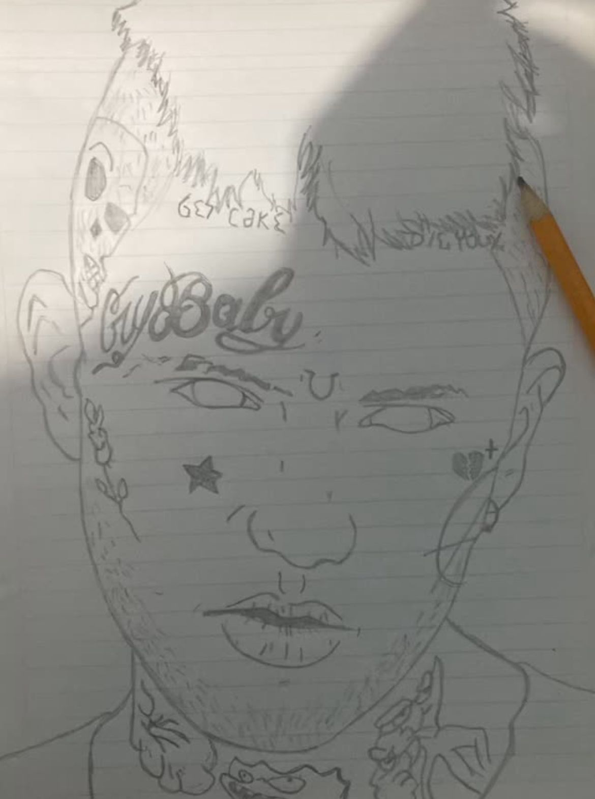
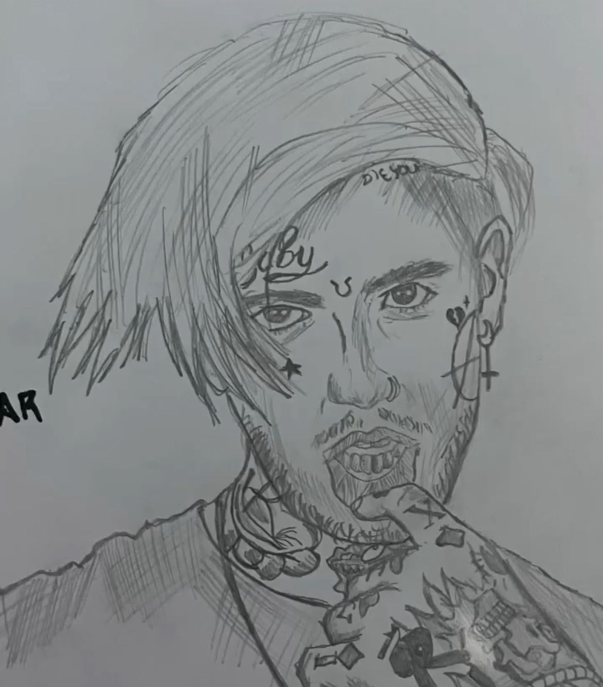
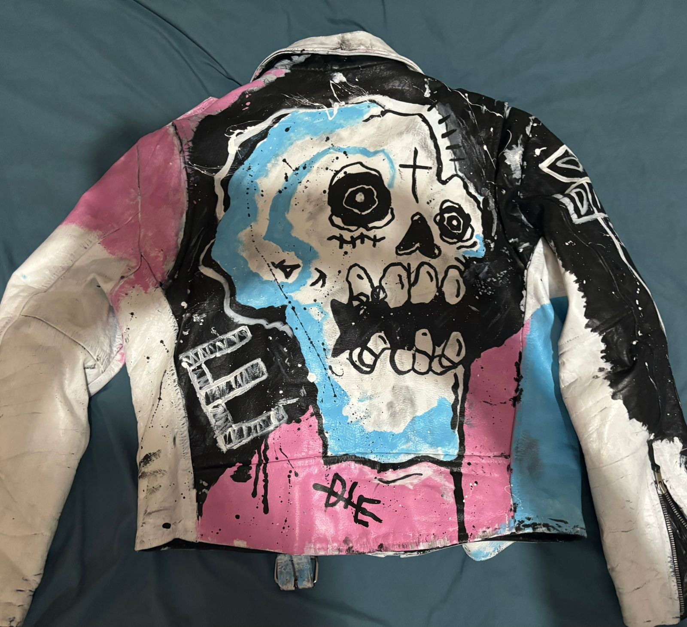
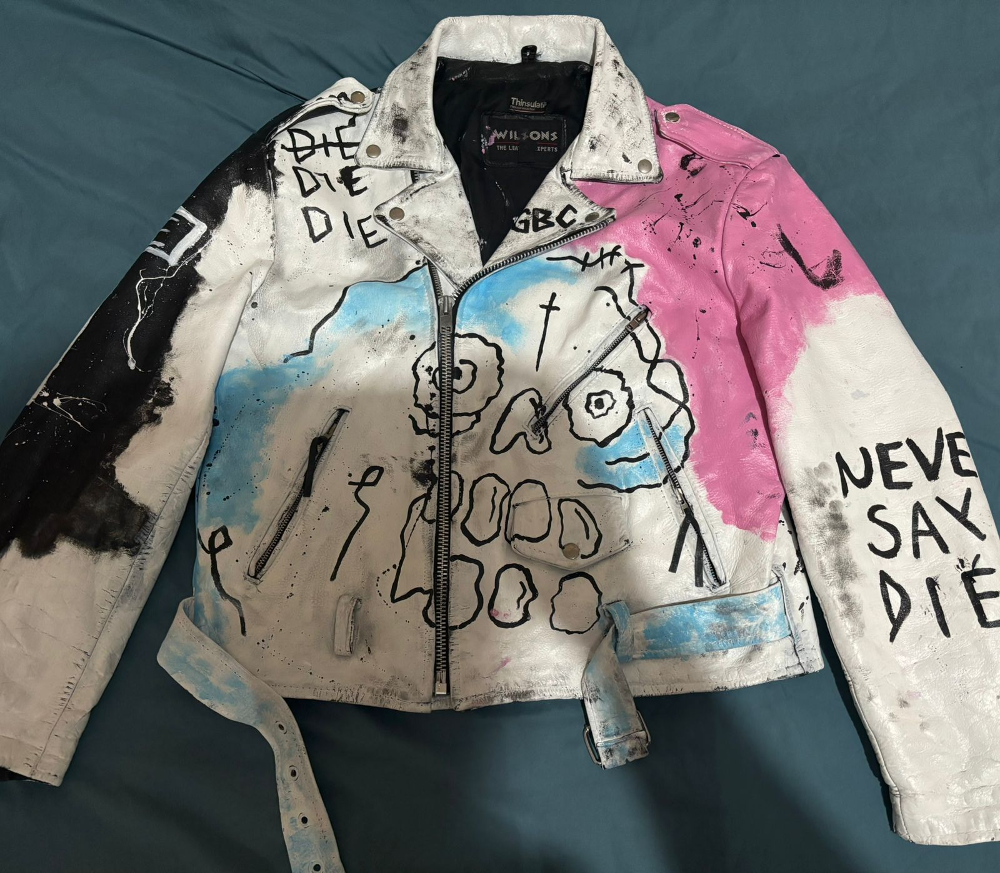

Uno de mis pasatiempos favoritos es el arte. Me llamo Josmar y comencé a dibujar desde que tenía 4 años. Actualmente, me encanta personalizar ropa con mis diseños, combinando colores y estilos únicos.
Mi estilo actual
Hace ya un rato personalicé una chamarra inspirada en la que usaba Lil Peep. La pinté con un diseño de calaveras y rosas, usando tonos neón y detalles en tinta fluorescente. Cada pieza que yo creo es única y refleja mi personalidad y pasión por el dibujo.
Galería de mis obras
|  |  |  |
|  | ||
Me gusta experimentar con diferentes técnicas y colores. Algunas veces uso detalles pequeños y otras destellos grandes para darle vida a mis diseños. Cada proyecto es una oportunidad de aprender y mejorar.